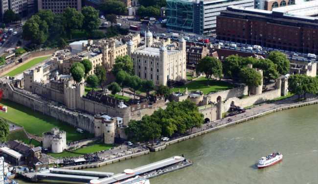

Nu este un lucru de mirare ca Turnul Londrei este obiectivul turistic si istoric cel mai popular printre turisti. Turnul Londrei a fost fondat de William Cuceritorul si peste un mileniu de istorie a Angliei s-au desfasurat in jurul sau in spatele zidurilor sale. In Turnul Londrei a fost executata Anne Boleyn, Guy Fawkes a fost interogat, iar Richard II si Elizabeth I au fost incarcerati aici. Stand de paza pe malul Tamisei, Turnul Londrei este un obiectiv turistic impresionant.
Turstii sunt invitati sa-i descopere secretele ascunse ce salasluiesc intre zidurile sale, sa se minuneze de splendoarea bijuteriilor coroanei, sa priveasca locul in care trei regine au fost decapitate si sa exploreze miturile si legendele care fac din vizita la Tower of London un moment important al vacantei la Londra.
Turistii pot afla o multime de lucruri interesante despre importanta bijuriilor coroanei dintr-o serie de filme introductive printre care se numara si un film color foarte rar cu secvente de la incoronarea Majestatii Sale Regina Elisabeta a II-a. O data ajunsi in Trezorerie, va veti minuna de frumusetea Coroanei Imperiale ce este purtata la deschiderea sesiunilor Parlamentului si veti putea admira cel mai mare si mai frumos diamant din lume aflat pe sceptrul Suveranei, numit Cullinan I. Strajerii Bijuteriilor Coroanei sunt foarte amabili si vor raspunde oricaror intrebari legate de aceasta colectie nepretuita. Veti putea afla mai multe despre istoria Bijuteriilor Coroanei in cadrul expozitiei Coroanei si Diamantelor existenta in Turnul Martin.
Nimeni nu stie mai multe lucruri despre istoria Turnului Londrei decat Strajerii Yeoman si o vizita la Turnul Londrei n-ar fi completa fara un tur complet in compania acestora. Strajerii au pazit acest palat fortareata timp de secole la rand. Ei va vor captiva cu povesti uimitoare, transmise din generatie in generatie si va vor prezenta Poarta Tradatorilor si locul unde erau executati. Veti avea si posibilitatea de a vizita Capela Sf. Petru, locul de odihna vesnica al celor executati in Turnul Londrei.
Primele pietre la baza acestei structuri impozante au fost puse in jurul anului 1078 din ordinul lui William Cuceritorul. Zidurile sale infricosatoare sunt acum loc de expunere al unor armuri din colectia regala, armuri ce au fost purtate de Henry al VIII-lea si Charles I, dar si al unei impresionante colectii de arme. Daca veti vizita Colectia Spaniola de Arme veti putea vedea o serie intreaga de instrumente de tortura dar si frumoasa Capela a Sf Ioan Evanghelistul.
Corbii sunt una dintre cele mai interesante expozitii de la Turnul Londrei. Aceste pasari minunate au trait intre zidurile fortaretei de sute de ani si legenta spune ca daca acesti corbi vor parasi Turnul Londrei, atunci intregul Regat se va narui. Ii puteti vedea peste tot in Turnul Londrei si le puteti vizita si adaposturile.